Papers Published in 2011-2015
| 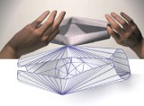 |
Camille Schreck, Damien Rohmer, Stefanie Hahmann, Marie-Paule Cani, Shuo Jin, Charlie C.L. Wang, and Jean-Francis Bloch,
"Nonsmooth developable geometry for interactively animating paper crumpling",
ACM Transactions on Graphics, vol.35, no.1, article no.10 (18 pages), December 2015.
[PDF]
Abstract We present the first method to animate sheets of paper at interactive rates, while automatically generating a plausible set of sharp features when the sheet is crumpled. The key idea is to interleave standard physically-based simulation steps with procedural generation of a piecewise continuous developable surface. The resulting hybrid surface model captures new singular points dynamically appearing during the crumpling process, mimicking the effect of paper fiber fracture. Although the model evolves over time to take these irreversible damages into account, the mesh used for simulation is kept coarse throughout the animation, leading to efficient computations. Meanwhile, the geometric layer ensures that the surface stays almost isometric to its original 2D pattern. We validate our model through measurements and visual comparison with real paper manipulation, and show results on a variety of crumpled paper configurations. |
| 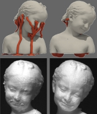 |
Xiaoting Zhang, Xinyi Le, Athina Panotopoulou, Emily Whiting, and Charlie C.L. Wang,
"Perceptual models of preference in 3D printing direction",
ACM Transactions on Graphics (SIGGRAPH Asia 2015), vol.34, no.6, article no.215 (12 pages), November 2015.
[PDF]
[Video@YouTube]
Abstract This paper introduces a perceptual model for determining 3D printing orientations. Additive manufacturing methods involving low-cost 3D printers often require robust branching support structures to prevent material collapse at overhangs. Although the designed shape can successfully be made by adding supports, residual material remains at the contact points after the supports have been removed, resulting in unsightly surface artifacts. Moreover, fine surface details on the fabricated model can easily be damaged while removing supports. To prevent the visual impact of these artifacts, we present a method to find printing directions that avoid placing supports in perceptually significant regions. Our model for preference in 3D printing direction is formulated as a combination of metrics including area of support, visual saliency, preferred viewpoint and smoothness preservation. We develop a training-and-learning methodology to obtain a closed-form solution for our perceptual model and perform a large-scale study. We demonstrate the performance of this perceptual model on both natural and man-made objects. |
| 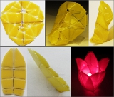 |
Tsz-Ho Kwok, Charlie C.L. Wang, Dongping Deng, Yunbo Zhang, and Yong Chen,
"Four-dimensional printing for freeform surfaces: design optimization of Origami and Kirigami structures",
ASME Journal of Mechanical Design,
Special Issue on Design for Additive Manufacturing, vol.137, no.11, 111712 (10 pages), October 2015. [PDF]
[Video@YouTube]
Abstract A self-folding structure fabricated by additive manufacturing can be automatically folded into a demanding 3D shape by actuation mechanisms such as heating. However, 3D surfaces can only be fabricated by self-folding structures when they are flattenable. Most generally designed parts are not flattenable. To address the problem, we develop a shape optimization method to modify a non-flattenable surface into flattenable. The shape optimization framework is equipped with topological operators for adding interior/boundary cuts to further improve the flattenability. When inserting cuts, self-intersection is locally prevented on the flattened 2D pieces. The total length of inserted cuts is also minimized to reduce artifacts on the finally folded 3D shape. |
| 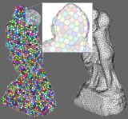 |
Yuen-Shan Leung, Xiaoning Wang, Ying He, Yong-Jin Liu, and Charlie C.L. Wang,
"A unified framework for isotropic meshing based on narrow-banded Euclidean distance transformation”,
Computational Visual Media, vol.1, no.3, pp.239-251, September 2015.
[Video@YouTube] (Best Paper Award)
Abstract In this paper, we propose a simple-yet-effective method for isotropic meshing relying on Euclidean distance transformation based centroidal Voronoi tessellation (CVT). Our approach improves the performance and robustness of computing CVT on curved domains while simultaneously providing high-quality output meshes. While conventional extrinsic methods compute CVTs in the entire volume bounded by the input model, we restrict the computation to a 3D shell of user-controlled thickness. Taking voxels which contain surface samples as sites, we compute the exact Euclidean distance transform on the GPU. Our algorithm is parallel and memory-efficient, and can construct the shell space for resolutions up to 20483 at interactive speed. The 3D centroidal Voronoi tessellation and restricted Voronoi diagrams are also computed efficiently on the GPU. Since the shell space can bridge holes and gaps smaller than a certain tolerance, and tolerate non-manifold edges and degenerate triangles, our algorithm can handle models with such defects, which typically cause conventional remeshing methods to fail. Our method can process implicit surfaces, polyhedral surfaces, and point clouds in a unified framework. Computational results show that our GPU-based isotropic meshing algorithm produces results comparable to state-of- the-art techniques, but is significantly faster than conventional CPU-based implementations. |
| 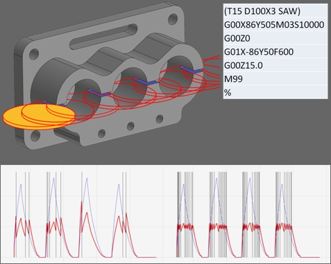 |
Ka-Chun Chan, and Charlie C.L. Wang,
"Progressive segmentation for MRR-based feed-rate optimization in CNC machining",
2015 IEEE International Conference on Automation Science and Engineering (CASE 2015), Gothenburg, Sweden, August 24-28, 2015.
[PDF] [Video@YouTube] (Finalist of Best Application Paper Award)
Abstract Keeping a constant cutting force in CNC machining is very important for obtaining better stability of cutting operation and improving topography, texture and geometry of the machined surface. This paper presents a feed-rate optimization approach based on Material Removal Rate (MRR). Given a tool-path with predefined feed-rates, the geometry of raw material, and the shape of cutter, the histogram of MRR in very fine resolution can be efficiently computed by using a GPU-based geometric modeling kernel. Starting from the evaluation given on the finest histogram of MRR, error-controlled subdivision algorithms are developed to progressively segment the tool-path into user-specified number of sub-regions. Different feed-rates are assigned to different sub-regions so that nearly constant MRR can be achieved while keeping the shape of the given tool-path unchanged. Experimental tests taken on real examples verify the effectiveness of this method. |
| 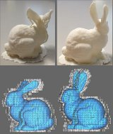 |
Kailun Hu, Xiaoting Zhang, and Charlie C.L. Wang,
"Direct computation of minimal rotation for support slimming",
2015 IEEE International Conference on Automation Science and Engineering (CASE 2015), Gothenburg, Sweden, August 24-28, 2015.
[PDF]
Abstract To reduce the usage of supporting structure in additive manufacturing, an orientation-driven shape optimizer was developed in our prior work [Hu et al. 2015] which employs a volumetric mesh enclosing the input 3D models as the domain of computation. The orientation of a model is computed indirectly by surface of the volumetric mesh. In this paper, we extend our indirect computation to an approach that the computation is directly based on the information of input models by an algorithm using incremental linear programming and K-means clustering. The performance of this approach is decoupled from the shape similarity between the volumetric mesh and the input model. As a result, representations obtained from simpler volumetric decomposition such as voxels can be adopted as the domain of computation. |
| 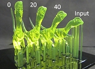 |
Kailun Hu, Shuo Jin, and Charlie C.L. Wang,
"Support slimming for single material based additive manufacturing",
Computer-Aided Design, vol.65, pp.1-10, August 2015.
[PDF] [Video@YouTube]
Abstract In layer-based additive manufacturing (AM), supporting structures need to be inserted to support the overhanging regions. The adding of supporting structures slows down the speed of fabrication and introduces artifacts onto the finished surface. We present an orientation-driven shape optimizer to slim down the supporting structures used in single material-based AM. The optimizer can be employed as a tool to help designers to optimize the original model to achieve a more self-supported shape, which can be used as a reference for their further design. The model to be optimized is first enclosed in a volumetric mesh, which is employed as the domain of computation. The optimizer is driven by the operations of reorientation taken on tetrahedra with `facing-down' surface facets. We formulate the demand on minimizing shape variation as global rigidity energy. The local optimization problem for determining a minimal rotation is analyzed on the Gauss sphere, which leads to a closed-form solution. Moreover, we also extend our approach to create the functions of controlling the deformation and searching for optimal printing directions. |
| 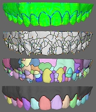 |
Ran Fan, Xiaogang Jin, and Charlie C.L. Wang,
"Multi-region segmentation based on compact shape prior",
IEEE Transactions on Automation Science and Engineering, vol.12, no.3, pp.1047-1058, July 2015.
[PDF] [Video@YouTube]
Abstract To solve the problem of generating segmentations of meaningful parts from scanned models with freeform surfaces, we explore a compact shape prior based segmentation approach in this paper. Our approach is inspired by an observation that a variety of natural objects consist of meaningful components in the form of compact shape and these components with compact shape are usually separated with each other by salient features. The segmentation for multi-regions is performed in two phases in our framework. Firstly, the segmentation is taken in low-level with the help of discrete Morse complex enhanced by anisotropic filtering. Secondly, we extract components with compact shape by using agglomerative clustering to optimize the normalized cut metric, in which the affinities of boundary compatibility, 2D shape compactness and 3D shape compactness are incorporated. The practical functionality of our approach is proved by applying it to the application of customized dental treatment. |
| 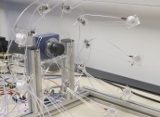 |
Wuyuan Xie, Chengkai Dai, and Charlie C.L. Wang,
"Photometric stereo with near point lighting: A solution by mesh deformation",
2015 IEEE Conference on Computer Vision and Pattern Recognition, Boston, Massachusetts, June 7-12, 2015.
[PDF]
[Extended Abstract]
[Data-Set]
[Video@YouTube]
Abstract We tackle the problem of photometric stereo under near point lighting in this paper. Different from the conventional formulation of photometric stereo that assumes parallel lighting, photometric stereo under the near point lighting condition is a nonlinear problem as the local surface normals are coupled with its distance to the camera as well as the light sources. To solve this non-linear problem of PS with near point lighting, a local/global mesh deformation approach is developed in our work to determine the position and the orientation of a facet simultaneously, where each facet is corresponding to a pixel in the image captured by the camera. Unlike nonlinear optimization schemes, the mesh deformation in our approach is decoupled into an iteration of interlaced steps of local projection and global blending. Experimental results verify that our method can generate accurate estimation of surface shape under near point lighting in a few iterations. Besides, this approach is robust to errors on the positions of light sources and is easy to be implemented. |
| 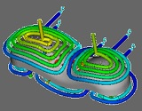 |
Yu Wang, Kai-Ming Yu, and Charlie C.L. Wang,
"Spiral and conformal cooling in plastic injection molding",
Computer-Aided Design, vol.63, pp.1-11, June 2015. [PDF]
Abstract Designing cooling channels for the thermoplastic injection process is a very important step in mold design. A conformal cooling channel can significantly improve the efficiency and the quality of production in plastic injection molding. This paper introduces an approach to generate spiral channels for conformal cooling. The cooling channels designed by our algorithms has very simple connectivity and can achieve effective conformal cooling for the models with complex shapes. The axial curves of cooling channels are constructed on a free-form surface conformal to the mold surface. With the help of boundary-distance maps, algorithms are investigated to generate evenly distributed spiral curves on the surface. The cooling channels derived from these spiral curves are conformal to the plastic part and introduce nearly no reduction at the rate of coolant flow. Therefore, the channels are able to achieve uniform mold cooling. Moreover, by having simple connectivity, these spiral channels can be fabricated by copper duct bending instead of expensive selective laser sintering. |
| 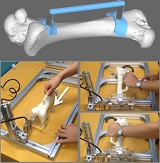 |
Xiaoting Zhang, Ka-Chun Chan, Charlie C.L. Wang, Kwok-Chuen Wong and Shekhar-Madhukar Kumta,
"Computing stable contact interface for customized surgical jigs",
2015 IEEE Conference on Robotics and Automation, Seattle, Washington, May 26-30, 2015, accepted. [PDF]
[Video@YouTube]
Abstract This paper presents a framework to compute stable contact interfaces for automatically designing customized jigs used in bone surgeries. Given the surface model of a bone represented by polygonal meshes, we find out a small region on the surface to be used as the interface of a customized jig so that it can be stably fixed on the bone under a directional clamping force. The variation of directions on the clamping force is allowed in our formulation. Moreover, the surface region serves as the interface of stable contact must also be disassemblable so that the jig and the bone can be separated after removing the clamping force. The analysis of stable contact is formulated on a Gaussian map by the common regions of half-spaces according to the motion restrictions. A flooding algorithm is proposed to determine those disassemblable and stable contact interfaces on the surface of a bone, where the contact surfaces are later converted into the solid model of a jig to be fabricated by additive manufacturing. Experimental tests are taken to verify the stable contact between a bone and the jig generated by our approach. |
| 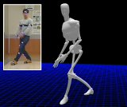 |
Yang Zheng, Ka-Chun Chan, and Charlie C.L. Wang,
"Pedalvatar: An IMU-based real-time body motion capture system using foot rooted kinematic model",
2014 IEEE/RSJ International Conference on Intelligent Robots and Systems (IROS 2014), Chicago, Illinois, September 14-18, 2014.
[PDF] [Video@YouTube]
Abstract In this paper, we present a low-cost IMU-based system, Pedalvatar, which can capture the full-body motion of users in real-time. Unlike the prior approaches using the hip-joint as the root of forward kinematic model, a foot-rooted kinematic model is developed in this work. A state change mechanism has also been investigated to allow dynamically switching the root of kinematic trees between the left and the right foot. Benefitted from this, full-body motions can be well captured in our system as long as there is at least one static foot in the movement. The 'floating' artifact of hip-joint rooted methods has been eliminated in our approach, and more complicated motions such as climbing stairs can be successfully captured in real-time. Comparing to those vision based systems, this IMU-based system provides more flexibility on capturing outdoor motions that are important for many robotic applications. |
| 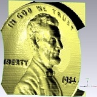 |
Wuyuan Xie, Yunbo Zhang, Charlie C.L. Wang, and Ronald C.-K. Chung,
"Surface-from-Gradients: An approach based on discrete geometry processing", 2014 IEEE Conference on Computer Vision and Pattern Recognition, Columbus, Ohio, June 24-27, 2014. (Oral presentation paper - with acceptance ratio as 5.75%)
[PDF]
[Video@TechTalks]
[Video@YouTube]
[Video2@YouTube]
[Project Page - with Code]
Abstract In this paper, we propose an efficient method to reconstruct surface-from-gradients (SfG). Our method is formulated under the framework of discrete geometry processing. Unlike the existing SfG approaches, we transfer the continuous reconstruction problem into a discrete space and efficiently solve the problem via a sequence of least-square optimization steps. Our discrete formulation brings three advantages: 1) the reconstruction preserves sharp-features, 2) sparse/incomplete set of gradients can be well handled, and 3) domains of computation can have irregular boundaries. Generally, these strengths of our method help overcome the unwanted distortions during the surface reconstruction. Our formulation is direct and easy to implement, and the comparisons with state-of-the-arts show the effectiveness of our method. |
| 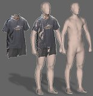 |
Tsz-Ho Kwok, Kwok-Yun Yeung, and Charlie C.L. Wang,
"Volumetric template fitting for human body reconstruction from incomplete data", Journal of Manufacturing Systems, vol.33, no.4, pp.678-689, October 2014.
[PDF]
[Video@YouTube]
[Project Page]
Abstract In this paper, we present a method for reconstructing 3D human body from incomplete data, which are point clouds captured by inexpensive RGB-D cameras. Making use of the volumetric mesh in a template, the fitting process is robust. This method produces high quality fitting results on incomplete data, which are hard to be offered by the surface fitting based methods. The method is formulated as an optimization procedure, so that the results of volumetric fitting rely on the quality of initial shape (i.e., the shape of template). In order to find a good initial shape, we develop a template selection algorithm to choose a template in an iterative manner by using the statistical models of human bodies. Experimental results show that our method can successfully reconstruct human body with less than 1% anthropometry measurement error. (Supplementary Technical Report - "PCA on human body database" [PDF]) |
| 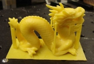 |
Pu Huang, Charlie C.L. Wang, and Yong Chen,
"Algorithms for layered manufacturing in image space",
Book Chapter, ASME Advances in Computers and Information in Engineering Research, vol.1, pp.377-410, August 2014.
[PDF]
[Project Page - with Code]
Abstract In this chapter, we investigate robust and efficient approaches for layered manufacturing process planning directly applied on an implicit solid, which is reconstructed from point cloud or volumetric images in the reverse engineering context. Approaches are developed in image space for the two main steps in process planning: support generation and slicing. The effectiveness of presented approach is demonstrated on the actual fabricated parts by layered manufacturing. |
| 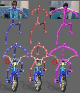 |
Tsz-Ho Kwok, and Charlie C.L. Wang,
"Shape optimization for human-centric product with standardized components",
Computer-Aided Design, vol.52, pp.51-63, July 2014.
[PDF] [Video@YouTube]
Abstract In this paper, we present an optimization framework for automating the shape customization of human-centric products, which can be mounted on or embedded in human body (such as exoskeletal devices and implants). This kind of products needs to be customized to fit the body shapes of users. At present, the design customization for freeform objects is often taken in an interactive manner that is inefficient. We investigate a method to automate the procedure of customization. Major difficulty in solving this problem is caused by the not freely changed shape of components. They should be selected from a series of standardized shapes. Different from the existing approaches that allow fabricating all components by customized production, we develop a new method to generate customized products by using as-many-as-possible standardized components. Our work is based on a mixed-integer shape optimization framework. |
| 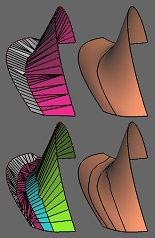 | Charlie C.L. Wang, and Gershon Elber,
"Multi-dimensional dynamic programming in ruled surface fitting",
Computer-Aided Design, vol.51, pp.39-49, June 2014.
[PDF]
Abstract Ruled surfaces play an important role in many manufacturing and construction applications. In this work, we explore a multi-dimensional dynamic programming based ruled surface fitting s cheme to a given freeform rational surface, S. Considering two initial opposite boundaries of S, sampled into a discrete piecewise linear polyline representation, the ruled surface fitting problem is reduced to a pairing-search between the polylines and elevations above the polylines, in the normal directions of S. A four-dimensional dynamic programming solution is sought for the four dimensions prescribed by the two polylines and the two elevation levels along the surface normals. This multi-dimensional dynamic programming is evaluated using highly parallel algorithms running on GPUs that ensures the best fit to the sampled data. In order to evaluate the fitting error with respect to S, we derive a scheme to compute a bound from above on the maximal error between a bilinear surface patch (formed by two consecutive point-pairs) and its corresponding surface region on S. Surface-surface composition is employed to extract the corresponding surface region on S to compare against. Finally, the above ruled surface fitting approach is also extended into a discrete algorithm to find the non-isoparametric subdivision curve on S when a discrete recursive piecewise-ruled surface fitting is considered. A five- or seven-dimensional dynamic programming solution is employed toward this end and once again, surface-surface composition is employed to extract the two subdivided patches as tensor products. |
| 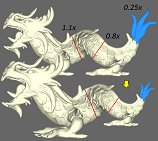 | Shuo Jin, Yunbo Zhang, and Charlie C.L. Wang,
"Deformation with enforced metrics on length, area and volume", Computer Graphics Forum,
Special Issue of Eurographics 2014, April 7-11, 2014, Strasbourg, France, vol.33, no.2, pp.429-438, May 2014.
[PDF] [Video@YouTube]
Abstract Techniques have been developed to deform a mesh with multiple types of constraints. One limitation of prior methods is that the accuracy of demanded metrics on the resultant model cannot be guaranteed. Adding metrics directly as hard constraints to an optimization functional often leads to unexpected distortion when target metrics differ significant from what are on the input model. In this paper, we present an effective framework to deform mesh models by enforcing demanded metrics on length, area and volume. To approach target metrics stably and minimize distortion,an iterative scale-driven deformation is investigated, and a global optimization functional is exploited to balance the scaling effect at different parts of a model. Examples demonstrate that our approach provides a user-friendly tool for designers who are used to semantic input. |
 |
Lianping Xing, Xiaoting Zhang, Charlie C.L. Wang and Kin-Chuen Hui,
"Highly parallel algorithms for visual perception guided surface remeshing",
IEEE Computer Graphics and Applications, vol.34, no.1, pp.52-64, February 2014.
[PDF]
[Project Page - with Program]
Abstract This article presents highly parallel algorithms for remeshing polygonal models guided by cues from human visual perception. The remeshing framework is based on meshfree techniques for processing surface sample points. The benefit is twofold: it is robust to input models with problematic connectivity and the geometric processing on points is easier to run in parallel on GPUs. The visual perception information is extracted in the image space and then mapped back to the Euclidean space. Based on these cues, a saliency field is generated to re-sample the input model. Lastly, a new projection operator is developed to further optimize the distribution of re-sampled points. As the number of vertices on the resultant model is controlled by the down-sampled points, this remeshing framework can also be used in model simplification. Experimental results demonstrate that our algorithm can remesh diverse polygonal models to well-shaped triangular meshes with high visual fidelity. |
| 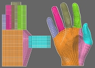 |
Tsz-Ho Kwok, and Charlie C.L. Wang, "Domain construction for volumetric cross-parameterization", Computers & Graphics, Special Issue of CAD/Graphics 2013 (with acceptance ratio as 31/344 = 9.01%), November 16-18, 2013, Hong Kong, vol.38, pp.86-96, February 2014. (Best Paper Honorable Mention) [PDF] [Data Set]
Abstract We present an algorithm in this paper for constructing volumetric domains with consistent topology to parameterize three-manifold solid models having homeomorphic topology. The volumetric parameterizations generated by our approach share the same set of base domains and are constrained by the corresponding anchor points. Our approach allows users to control interior mappings by specifying interior anchor points, and the anchor points are interpolated exactly. With the help of a novel construction algorithm developed in this work, the volumetric cross-parameterization computed by our method demonstrates its functionality in several examples. |
| 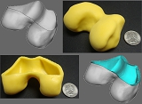 | Charlie C.L. Wang, and Yong Chen, "Thickening freeform surfaces for solid fabrication", Rapid Prototyping Journal, vol.19, no.6, pp.395-406, November 2013. [PDF]
[Project Page - with Program]
[Source Code]
Abstract Given an intersection-free mesh surface S, we introduce a method to thicken S into a solid H located at one side of S. By such a surface-to-solid conversion operation, industrial users are able to fabricate a designed (or reconstructed) surface by rapid prototyping. In this paper, we first investigate an implicit representation of the thickened solid H according to an extension of signed distance function. After that, a partial surface reconstruction algorithm is proposed to generate the boundary surface of H, which remains the given surface S on the resultant surface. Experimental tests show that the thickening results generated by our method give nearly uniform thickness and meanwhile do not present shape approximation error at the region of input surface S. These two good properties are important to the industria applications of solid fabrication. |
 | Kwok-Yun Yeung, Tsz-Ho Kwok, and Charlie C.L. Wang, "Improved skeleton tracking by duplex Kinects: a practical approach for real-time applications", ASME Journal of Computing and Information Science in Engineering, vol.13, no.4, 041007 (10 pages), October 2013. [PDF]
[Video@YouTube]
[Code of Skeleton Optimization]
Abstract Recent development of per-frame motion extraction method can generate the skeleton of human motion in real-time with the help of RGB-D cameras such as Kinect. This leads to an economic device to provide human motion as input for real-time applications. As generated by a single-view image plus depth information, the extracted skeleton usually has problems of unwanted vibration, bone-length variation, self-occlusion, etc. This paper presents an approach to overcome these problems by synthesizing the skeletons generated by duplex Kinects, which capture the human motion in different views. The major technical difficulty of this synthesis comes from the inconsistency of two skeletons. Our algorithm is formulated under the constrained optimization framework by using the bone-lengths as hard constraints and the tradeoff between inconsistent joint positions as soft constraints. Schemes are developed to detect and re-position the problematic joints generated by per-frame method from duplex Kinects. As a result, we develop an easy, cheap and fast approach that can improve the skeleton of human motion at an average speed of 5ms per frame. |
| 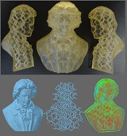 | Yong Chen, and Charlie C.L. Wang, "Regulating complex geometries using Layered Depth-Normal Images for rapid prototyping and manufacturing", Rapid Prototyping Journal, vol.19, no.4, pp.253-268, July 2013. Abstract Most layer-based rapid prototyping systems use polygonal models as input. In addition, the input polygonal models need to be manifold and water-tight; otherwise the built objects may have defects or the building process may fail in some cases. In this paper, a regulation method of an arbitrarily complex polygonal model is presented for rapid prototyping and manufacturing applications. The method is based on a semi-implicit representation of a solid model named the Layered Depth-Normal Images (LDNI), which sparsely encodes the shape boundary of a polygonal model in three orthogonal directions. In the method, input polygonal models or parametric equations are first converted into LDNI models. A regulation operator based on the computed LDNI models is presented. A volume tiling technique is developed for very complex geometries and high accuracy requirements. From the processed LDNI model, an adaptive contouring method is presented to construct a cell representation that includes both uniform and octree cells. Finally, two-manifold and water-tight polygonal mesh surfaces are constructed from the cell representation. The LDNI-based mesh regulation operation can be robust due to its simplicity. The accuracy of the generated regulated models can be controlled by setting LDNI pixel width. Parallel computing techniques can be employed to accelerate the computation in the LDNI-based method. Experimental results on various CAD models demonstrate the effectiveness and efficiency of our approach for complex geometries. |
| 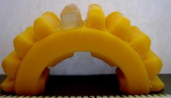 |
Xuejin Zhao, Yayue Pan, Chi Zhou, Yong Chen, and Charlie C.L. Wang,
"An integrated CNC accumulation system for automatic building-around-inserts",
Journal of Manufacturing Processes, vol.15, no.4, pp.432-443, October 2013.
[PDF]
(This is an extended version of the paper NAMRC41-1574, which gains the NAMRI/SME Outstanding Paper Award and is published in the 41th SME-North American Manufacturing Research Conference, Madison, Wisconsin, June 10-14, 2013.) Abstract In this paper a non-layer-based additive manufacturing (AM) process named computer numerically controlled (CNC) accumulation process is presented for applications such as plastic part repairing and modification. To facilitate the AM process, a novel three-dimensional (3D) laser scanning system based on a micro-electo-mechanical system (MEMS) device is developed for in situ scanning of inserted components. The integration of the scanning system in the CNC accumulation process enables the building-around-inserts with little human efforts. A point processing method based on the algebraic point set surface (APSS) fitting and layered depth-normal image (LDNI) representation is developed for converting the scanning points into triangular meshes. The newly developed 3D scanning system is compact with sufficient accuracy for the CNC accumulation process. Based on the constructed base surface model, data processing operations including multi-axis tool path planning and motion control are also investigated. Multiple test cases are performed to illustrate the capability of the integrated CNC accumulation process on addressing the requirements of building-around-inserts. |
| 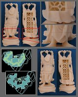 | Pu Huang, Charlie C.L. Wang, and Yong Chen, "Intersection-free and topologically faithful slicing of implicit solid", ASME Journal of Computing and Information Science in Engineering, vol.13, no.2, 021009 (13 pages), June 2013. [PDF] (This is an extended version of the paper - Self-intersection free and topologically faithful slicing of implicit solid, which gains the Prakash Krishnaswami CAPPD Best Paper Award and is published in ASME IDETC/CIE 2011 Conference, Washington, DC, USA, August 28-31, 2011.) Abstract We present a robust and efficient approach to directly slicing implicit solids. Different from prior slicing techniques that reconstruct contours on the slicing plane by tracing the topology of intersected line segments which is actually not robust, we generate contours through a topology guaranteed contour extraction on binary images sampled from given solids and a subsequent contour simplification algorithm which has the topology preserved and the geometric error controlled. The resultant contours are free of self-intersection, topologically faithful to the given r-regular solids and with shape error bounded; therefore, correct objects can be fabricated from them by rapid prototyping. Moreover, since we do not need to generate the tessellated B-rep of given solids, our approach is memory efficient - only the binary image and the finest contours on one particular slicing plane need to be stored in-core. Our method is general and can be applied to any implicit representations of solids. |
| 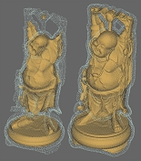 | Charlie C.L. Wang, and Dinesh Manocha, "GPU-based offset surface computation using point samples", Computer-Aided Design, Special Issue of 2012 Symposium on Solid and Physical Modeling, October 29-31, 2012, Dijon, France, vol.45, no.2, pp.321-330, February 2013. [PDF] Abstract We present an efficient algorithm to perform approximate offsetting operations on geometric models using GPUs. Our approach approximates the boundary of an object with point samples and computes the offset by merging the balls centered at these points. The underlying approach uses Layered Depth Images (LDI) to organize the samples into structured points and performs parallel computations using multiple cores. We use spatial hashing to accelerate intersection queries and balance the workload among various cores. Furthermore, the problem of offsetting with a large distance is decomposed into successive offsetting using smaller distances. We derive bounds on the accuracy of offset computation as a function of the sampling rate of LDI and offset distance. In practice, our GPU-based algorithm can accurately compute offsets of models represented using hundreds of thousands of points in a few seconds on GeForce GTX 580 GPU. We observe more than 100 times speedup over prior serial CPU-based approximate offset computation algorithms. |
| 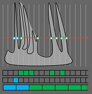 | Yuen-Shan Leung, and Charlie C.L. Wang, "Conservative sampling of solids in image space", IEEE Computer Graphics and Applications, vol.33, no.1, pp.14-25, January/February, 2013. [PDF]
Abstract This paper presents a new method for sampling B-rep solid models into Layered Depth Images (LDI). The boundary of the sampled models represented by LDI is closed and the sampled models are guaranteed to bound the input B-rep models on the rays of LDI (called conservative). The sampling method can be fully implemented by shader programs supported by various graphics hardware. Experimental results demonstrate the efficiency of the proposed method, and the applications in intersecting volume evaluation and Minkowski sum computation are given at the end of this paper to show the versatility of this approach.[Project Page - with Source Code] |
| 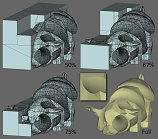 | Charlie C.L. Wang, and Dinesh Manocha, "Efficient boundary extraction of BSP solids based on clipping operations", IEEE Transactions on Visualization and Computer Graphics, vol.19, no.1, pp.16-29, January 2013.
[PDF]
[Supplementary]
[Project Page - with Program]
[Data Set of Boolean Example]
[Data Set of Noisy Models]
Abstract We present an efficient algorithm to extract the manifold surface that approximates the boundary of a solid represented by a Binary Space Partition (BSP) tree. Our polygonization algorithm repeatedly performs clipping operations on volumetric cells that correspond to a spatial convex partition and computes the boundary by traversing the connected cells. We use point-based representations along with finite-precision arithmetic to improve the efficiency and generate the B-rep approximation of a BSP solid. The core of our polygonization method is a novel clipping algorithm that uses a set of logical operations to make it resistant to degeneracies resulting from limited precision of floating-point arithmetic. The overall BSP to B-rep conversion algorithm can accurately generate boundaries with sharp and small features, and is faster than prior methods. At the end of this paper, we use this algorithm for a few geometric processing applications including Boolean operations, model repair and mesh reconstruction. |
| 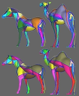 | Tsz-Ho Kwok, Yunbo Zhang, and Charlie C.L. Wang, "Efficient optimization of common base domains for cross-parameterization", IEEE Transactions on Visualization and Computer Graphics, vol.18, no.10, pp.1678-1692, October 2012.[PDF] [Project Page - with Program] Abstract Given a set of corresponding user-specified anchor points on a pair of models having similar features and topologies, the cross-parameterization technique can establish a bijective mapping constrained by the anchor points. In this paper, we present an efficient algorithm to optimize the complexes and the shape of common base domains in cross-parameterization for reducing the distortion of the bijective mapping. The optimization is also constrained by the anchor points. We investigate a new signature, Length-Preserved Base Domain (LPBD), for measuring the level of stretch between surface patches in cross-parameterization. This new signature well balances the accuracy of measurement and the computational speed. Based on LPBD, a set of metrics are studied and compared. The best ones are employed in our domain optimization algorithm that consists of two major operators, boundary swapping and patch merging. Experimental results show that our optimization algorithm can reduce the distortion in cross-parameterization efficiently. |
| 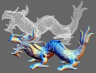 | Shengjun Liu, and Charlie C.L. Wang, "Quasi-interpolation for surface reconstruction from scattered data with radial basis function", Computer Aided Geometric Design, Special Issue of 2012 Geometric Modeling and Processing (GMP) conference, June 20-22, 2012, Mount Huang, vol.29, no.7, pp.435-447, October 2012. [PDF] Abstract Radial Basis Function (RBF) has been used in surface reconstruction methods to interpolate or approximate scattered data points, which involves solving a large linear system. The linear systems for determining coefficients of RBF may be ill-conditioned when processing a large point set, which leads to unstable numerical results. We introduce a quasi-interpolation framework based on compactly supported RBF to solve this problem.In this framework, implicit surfaces can be reconstructed without solving a large linear system. With the help of an adaptive space partitioning technique, our approach is robust and can successfully reconstruct surfaces on non-uniform and noisy pointsets. Moreover, as the computation of quasi-interpolation is localized, it can be easily parallelized on multi-core CPUs. |
| 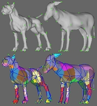 | Tsz-Ho Kwok, Yunbo Zhang, and Charlie C.L. Wang, "Constructing common base domains by cues from Voronoi diagram", Graphical Models, Special Issue of 2012 Geometric Modeling and Processing (GMP) conference, June 20-22, 2012, Mount Huang, vol.74, no.4, pp.152-163, July 2012. [PDF] [Project Page - with Program] Abstract In this paper, we propose a novel algorithm to construct common base domains for cross-parameterization constrained by anchor points. Based on the common base domains, a bijective mapping between given models can be established. Experimental results show that the distortion in a cross-parameterization generated on our common base domains is much smaller than that of a mapping on domains constructed by prior methods. Different from prior algorithms that generate domains by a heuristic of having higher priority to link the shortest paths between anchor points, we compute the surface Voronoi diagram of anchor points to find out the initial connectivity for the base domains. The final common base domains can be efficiently generated from the initial connectivity. The Voronoi diagram of the anchor points gives better cues than the heuristic of connecting shortest paths greedily, therefore resulting in an efficient and reliable algorithm for construction of common base domains that bring to low distortion in constrained cross-parameterization. |
| 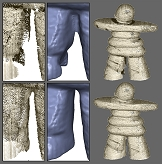 | Shengjun Liu, Kwan-Chung Chan and Charlie C.L. Wang, "Iterative consolidation of unorganized points", IEEE Computer Graphics and Applications, vol.32, no.3, pp.70-83, May 2012. [PDF] Abstract Unorganized point clouds obtained from 3D shape acquisition devices usually present noises, outliers, and nonuniformities. In this article, we propose a framework to consolidate unorganized points by an iterative procedure of interlaced down-sampling and up-sampling steps. After down-sampling and up-sampling, selection operations are conducted to remove outliers while preserving geometric details. The uniformity of points is improved by moving the down-sampled particles and the following refinement of point samples, and the missed regions are filled through surface extrapolation. Moreover, an adaptive sampling strategy is employed to speed up the iterations. Experimental results demonstrate the effectiveness of the proposed point processing framework. |
| 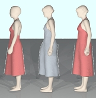 | Yuwei Meng, Charlie C.L. Wang, and Xiaogang Jin, "Flexible shape control for automatic resizing of apparel products", Computer-Aided Design, vol.44, no.1, pp.68-76, January 2012. [PDF] [Data Set]
Abstract We provide a flexible shape control technique in this paper for the automatic resizing of apparel products. The automatic resizing function has become an essential part of the 3D garment CAD systems to generate user customized apparel products for individuals with variant body shapes. The human bodies are usually represented by piecewise linear mesh surfaces with consistent connectivity. The shape of apparel products can then be warped from the space around a human body to the space around another body by computing the new positions of points on apparel products. However, one major limitation of this kind of automatic resizing technique is that the apparel products are always distorted along the shape of the human bodies. This is a required deformation for tight clothes but not an expected result for other types of clothes. To solve this problem, we investigate a method to preserve the shape of user defined features on the apparel products. As the apparel products are often represented by discrete surfaces with non-manifold entities, the existing mesh processing approaches that preserve the local shape cannot be applied here. A new algorithm consisting of three steps is developed in this paper. Firstly, the apparel product is warped from the reference human body to the space around the target human body. Secondly, the shape of features is optimized to match their original shape before the warping. Lastly, discrete surfaces of the apparel product are deformed again under an optimization framework to match their original shapes locally while interpolating the shape of features determined in the previous step. |
| 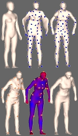 | Samuel S.-M. Li, Charlie C.L. Wang, and Kin-Chuen Hui, "Bending-invariant correspondence matching on 3D human bodies for feature point extraction", IEEE Transactions on Automation Science and Engineering, vol.8, no.4, pp.805-814, October 2011. [PDF] [Video@YouTube] Abstract In this paper, we present an automatic approach to match correspondences on 3D human bodies in various postures so that feature points can be automatically extracted. The feature points are very important to the establishment of volumetric parameterization around human bodies for the human-centered customization of soft-products [Wang et al., 2007]. For a given template human model with a set of predefined feature points, we first down-sample the input model into a set of sample points.Then, the corresponding points of these samples on the human model are identified by minimizing the distortion with the help of a series of transformations regardless of their differences in postures, scales or positions. The basic idea of our algorithm is to transform the template human body to the shape of the input model iteratively. To generate a bending invariant mapping, the initial correspondence/transformation is computed in a multi-dimensional scaling (MDS) embedding domain of 3D human models, where the Euclidean distance between two samples on a 3D model in the MDS domain corresponds to the geodesic distance between them in R³. As the posture change (i.e., the body bending) of a human model can be considered as approximately isometric in the intrinsic 3D shape, the initial correspondences established in the MDS domain can greatly enhance the robustness of our approach in body bending. Once the correspondences between the surface samples on the template model and the input model are determined after iterative transformations, we have essentially found the corresponding feature points on the input model. Lastly, the locations of the feature points on the input model are refined by a curvature map based local matching step. |
| 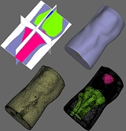 | Charlie C.L. Wang, "Computing on rays: a parallel approach for surface mesh modeling from multi-material volumetric data", Computers in Industry, vol.62, no.7, pp.660-671, September 2011. [PDF] Abstract Ray representation (Ray-rep) of a solid has been studied and used in the solid modeling community for many years because of its compactness and simplicity. This paper presents a parallel approach for mesh surface modeling from multi-material volume data using an extended Ray-rep as an intermediate, where every homogeneous region is enclosed by a set of two-manifold surface meshes on the resultant model. The approach consists of three major algorithms: firstly, an algorithm is developed to convert the given multi-material volumetric data into a Ray-rep for heterogeneous solid; secondly, filtering algorithm is exploited to process the rays of heterogeneous solid in parallel; and lastly, the adaptive mesh surfaces are generated from the ray-rep through a dual-contouring like algorithm. Here the intermediate surfaces between two constituent materials can be directly extracted without building the volumetric mesh, and the manifold topology is preserved on each surface patch. Furthermore, general offset surface can be easily computed in this paradigm by designing a special parallel operator for the rays. |
| 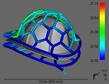 | Yu Wang, Kai-Ming Yu, Charlie C.L. Wang, and Yunbo Zhang, "Automatic design of conformal cooling circuit for rapid tooling", Computer-Aided Design, vol.43, no.8, pp.1001-1010, August 2011. [PDF] Abstract This paper presents an automatic method for designing conformal cooling circuit, which is an essential component that directly affects the quality and timing for the products fabricated by rapid tooling. To reduce the time of cooling and control the uniformity of temperature and volumetric shrinkage, industry expects to have cooling channels that are conformal to the shape of products. We achieve the goal of automatically designing such conformal cooling circuit in twofold. First, the relationship between the conformal cooling and the geometry shape of cooling circuit is formulated. Based on that, we investigate a geometric modeling algorithm to design the cooling circuit approaching the conformal cooling. Simulations have been taken to verify the advantage of the cooling circuit generated by our algorithm. |
| 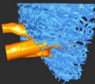 | Hanli Zhao, Charlie C.L. Wang, Yong Chen, and Xiaogang Jin,
"Parallel and efficient Boolean on polygonal solids",
The Visual Computer, Special Issue of Computer Graphics International 2011 (CGI 2011), vol.27, no.6-8, pp.507-517, Ottawa, Ontario, Canada, June 12-15, 2011.
(With acceptance ratio as 35/220 = 15.9%) [PDF]
[Video@YouTube]
Abstract We present a novel framework which can efficiently evaluate approximate Boolean set operations for B-rep models by highly parallel algorithms. This is achieved by taking axis-aligned surfels of Layered Depth Images (LDI) as the bridge and performing Boolean on the structured points. This paper has many improvements as compared with prior surfel-based approaches. First, we adopt key-data pairs to store LDI more compactly. In addition, robust depth peeling is investigated to overcome the bottleneck of layer-complexity. Moreover, an out-of-core tiling technique is presented to overcome the limitation of memory. Real-time feedback is provided by streaming the proposed pipeline on the many-core graphics hardware. |
| 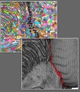 | Charlie C.L. Wang, "Approximate Boolean operations on large polyhedral solids with partial mesh reconstruction", IEEE Transactions on Visualization and Computer Graphics, vol.17, no.6, pp.836-849, June 2011. [PDF] [Project Page - with Program] Abstract We present a new approach to compute the approximate Boolean operations of two freeform polygonal mesh solids efficiently with the help of Layered Depth Images (LDI). After applying the LDI sampling based membership classification, the most challenging part, a trimmed adaptive contouring algorithm, is developed to reconstruct the mesh surface from LDI samples near the intersected regions and stitch it to the boundary of the retained surfaces. Our method of approximate Boolean operations holds the advantage of numerical robustness as the approach uses volumetric representation. However, unlike other methods based on volumetric representation, we do not damage the facets in non-intersected regions, thus preserving geometric details much better and speeding up the computation as well. We show that the proposed method can successfully compute the Boolean operations of freeform solids with a massive number of polygons in a few seconds. |
| 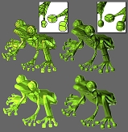 | Yuen-Shan Leung, Charlie C.L. Wang, and Yunbo Zhang, "Localized construction of curved surfaces from polygon meshes: a simple and practical approach on GPU", Computer-Aided Design, vol.43, no.6, pp.573-585, June 2011. [PDF] Abstract We present a method for refining n-sided polygons on a given piecewise linear model by using local computation, where the curved polygons generated by our method interpolate the positions and normals of vertices on the input model. Firstly, we construct a Bezier curve for each silhouette edge. Secondly, we employ a new method to obtain C1 continuous cross-tangent functions that are constructed on these silhouette curves. An important feature of our method is that the cross tangent functions are produced solely by their corresponding facet parameters. Gregory patches can therefore be locally constructed on every polygons while preserving G1 continuity between neighboring patches. To provide a flexible shape control, several local schemes are provided to modify the cross-tangent functions so that the sharp features can be retained on the resultant models. Because of the localized construction, our method can be easily accelerated by graphics hardware and fully run on the Graphics Processing Unit (GPU). |
| 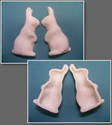 | Shengjun Liu, and Charlie C.L. Wang, "Fast intersection-free offset surface generation from freeform models with triangular meshes", IEEE Transactions on Automation Science and Engineering, vol.8, no.2, pp.347-360, April 2011. [PDF]
[Source Code]
Abstract A fast offset surface generation approach is presented in this paper to construct intersection-free offset surfaces, which preserve sharp features, from freeform triangular mesh surfaces. The basic spirit of our algorithm is to sample a narrow-band signed distance-field from the input model on a uniform grid and then employ a contouring algorithm to build the resultant offset mesh surface from the signed distance-field. Four filters are conducted to generate the narrow-band signed distance-field around the offset surface in a very efficient way by alleviating computation redundancies in the regions far from the offset surfaces. The resultant mesh surfaces are generated by a modified dual contouring algorithm which relies on accurate intersections between the grid edges and the isosurfaces. A hybrid method is developed to prevent the expensive bisection search in the configurations that the analytical solutions exist. Our modified intersection-free dual contouring algorithm is based on convex-concave analysis, which is more robust and efficient. The quality and performance of our approach are demonstrated with a number of experimental tests on various examples. (Supplementary Technical Report - "Intersection-free dual contouring on uniform grids: an approach based on convex/concave analysis" [PDF]) |
| 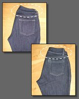 | Yunbo Zhang, and Charlie C.L. Wang,
"WireWarping++: Robust and flexible surface flattening with length control", IEEE Transactions on Automation Science and Engineering, vol.8, no.1, pp.205-215, January 2011. [PDF] Abstract Surface flattening has numerous applications in sheet manufacturing industries, such as garment industry, shoe industry, toy industry,furniture industry and ship industry. Motivated by the requirements of those industries, WireWarping approach presented in [Wang08] is exploited to generate 2D patterns with invariant length of feature and boundary curves. However, strict length constraints on all feature curves sometimes cause large distortions on 2D patterns, especially for those 3D surfaces which are highly non-developable. In this paper, we present a flexible and robust extension of WireWarping by introducing a new type of feature curves named elastic feature, which brings flexibility to shape control of the resultant 2D patterns. On these new feature curves, instead of strictly preserving the exact lengths, only the ranges of their lengths are controlled. To achieve this function, a multi-loop shape control optimization framework is proposed to find the optimized 2D shape among all possible flattening results with different length variations on those elastic feature curves, while the lengths of other feature curves are kept unchanged. Besides, we also present a topology processing algorithm on the network of feature curves to eliminate cases that lead to numerical singularity. Experimental results show that the WireWarping++ can successfully flatten surface patches into 2D patterns with more flexible shape control and more robust numerical performance. |
| 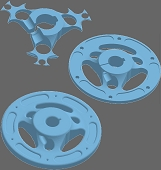 | Yong Chen, and Charlie C.L. Wang, "Uniform offsetting of polygonal model based on Layered Depth-Normal Images", Computer-Aided Design, vol.43, no.1, pp.31-46, January 2011. [PDF] Abstract Uniform offsetting is an important geometric operation for computer-aided design and manufacturing (CAD/CAM) applications such as rapid prototyping, NC machining, coordinate measuring machines, robot collision avoidance, and Hausdorff error calculation. We present a novel method for offsetting (grown and shrunk) a solid model by an arbitrary distance r. First, offset polygons are directly computed for each face, edge, and vertex of an input solid model. The computed polygonal meshes form a continuous boundary; however, such boundary is invalid since there exist meshes that are closer to the original model than the given distance r as well as self-intersections. Based on the problematic polygonal meshes, we construct a well-structured point-based model, Layered Depth-Normal Images (LDNI), in three orthogonal directions. The accuracy of the generated point-based model can be controlled by setting the tessellation and sampling rates during the construction process. We then process all the sampling points in the model by using a set of point filters to delete all the invalid points. Based on the remaining points, we construct a 2-manifold polygonal contour as the resulted offset boundary. Our method is general, simple and efficient. We report experimental results on a variety of CAD models and discuss various applications of the developed uniform offsetting method. |
Book and Survey Papers
| 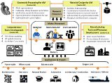 |
Wei Gao, Yunbo Zhang, Devarajan Ramanujan, Karthik Ramani, Yong Chen,
Christopher B. Williams, Charlie C.L. Wang, Yung C. Shin, Song Zhang, Pablo D. Zavattieri,
"The status, challenges, and future of additive manufacturing in engineering",
Computer-Aided Design, vol.69, pp.65-89, December 2015. (Survey Paper)
Abstract Additive manufacturing (AM) is poised to bring about a revolution in the way products are designed, manufactured and distributed to end users. This technology has gained significant academic as well as industry interest due to its ability to create complex geometries with customizable material properties. AM has also inspired the development of the maker movement by democratizing design and manufacturing. Due to the rapid proliferation of a wide variety of technologies associated with AM, there is a lack of a comprehensive set of design principles, manufacturing guidelines, and standardization of best practices. These challenges are compounded by the fact that advancements in multiple technologies (for example materials processing, topology optimization) generate a "positive feedback loop" effect in advancing AM. In order to advance research interest and investment in AM technologies, some fundamental questions and trends about the dependencies existing in these avenues need highlighting. The goal of our review paper is to organize this body of knowledge surrounding AM, and present current barriers, findings and future trends significantly to the researchers. We also discuss fundamental attributes of AM processes, evolution of the AM industry, and the affordances enabled by the emergence of AM in a variety of areas such as geometry processing, material design and education. We conclude our paper by pointing out future directions such as the "print-it-all" paradigm, that have the potential to re-imagine current research and spawn completely new avenues for exploration. |
| Charlie C.L. Wang, Geometric Modeling and Reasoning of Human-Centered Freeform Products, Springer, 2013. The recent trend in user-customized product design requires the shape of products to be automatically adjusted according to the human body's shape, so that people will feel more comfortable when wearing these products. Geometric approaches can be used to design the freeform shape of products worn by people, which can greatly improve the efficiency of design processes in various industries involving customized products (e.g., garment design, toy design, jewel design, shoe design, and design of medical devices, etc.). These products are usually composed of very complex geometric shapes (represented by free-form surfaces), and are not driven by a parameter table but a digital human model with free-form shapes or part of human bodies (e.g., wrist, foot, and head models). Geometric Modeling and Reasoning of Human-Centered Freeform Products introduces the algorithms of human body reconstruction, freeform product modeling, constraining and reconstructing freeform products, and shape optimization for improving the manufacturability of freeform products. Based on these techniques, the design automation problem for human-centered freeform products can be fundamentally solved. Researchers and developers working on problems of automatic designing individually customized products can use this book as a reference, and it can also be used in courses in computer-aided product design at the graduate level. |